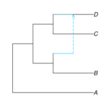

Getting started
To demonstrate, we will plot the simple network: (A,((B,#H1),(C,(D)#H1)));
To start plotting, use the packages:
julia> using PhyloNetworksjulia> using PhyloPlots
Then read the topology
julia> net = readnewick("(A,((B,#H1),(C,(D)#H1)));")HybridNetwork, Rooted Network 9 edges 9 nodes: 4 tips, 1 hybrid nodes, 4 internal tree nodes. tip labels: A, B, C, D (A,((B,#H1),(C,(D)#H1)));
and call plot, as shown below.
plot(net);
For the function's full documentation, see here: plot.
Compared to v0.3, v1 does not support the Gadfly-based plots, and uses small-case-only argument names.
The v0.3 syntax plot(net, :R; ...) still works in v1.0 but is deprecated, and will be removed in a future release. For example, you can still use plot(net, :R; showNodeNumber=true), but you should instead start using plot(net; shownodenumber=true).